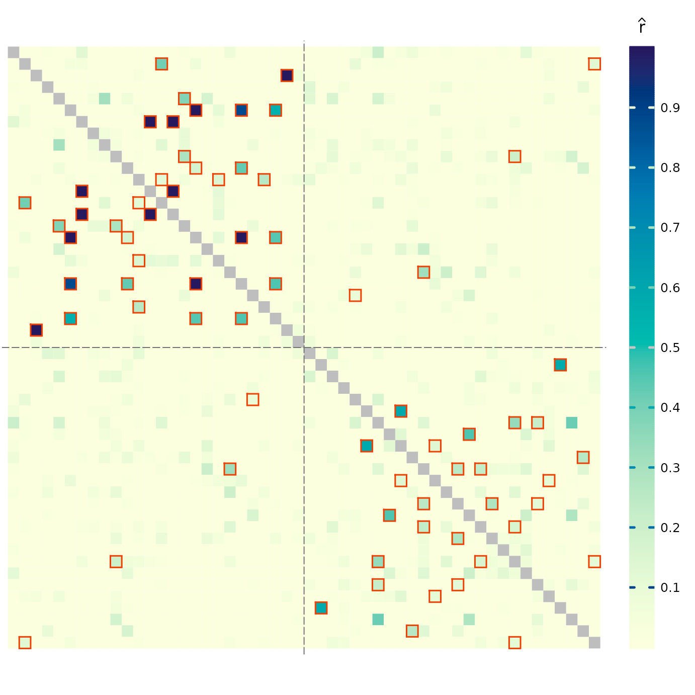

Creates a colorbar for a plot.
Usage
plotColorbar(
rlim = c(0, 1),
by = 0.1,
at = NULL,
horiz = FALSE,
col = grDevices::hcl.colors(301, "YlGnBu", rev = TRUE),
...
)Arguments
- rlim
the range of values to be represented by colors.
- by
increment size for tickmark locations. Ignored if
atis provided.- at
a vector of tickmark locations.
- horiz
a logical value specifying if the colorbar should be drawn horizontally.
- col
the colors for the colorbar.
- ...
other graphical parameters.
Details
The colorbar will fill the whole plotting region, which needs to be
specified outside of this function to control proportions and location of
the colorbar (see examples). To match the colors in the main plot,
rlim values should be the same for plotRel and
plotColorbar; if rlim = NULL or rlim = NA in
plotRel, provide the actual range of relatedness estimates for
plotColorbar (see examples).
See also
plotRel for plotting relatedness estimates.
Examples
parstart <- par(no.readonly = TRUE) # save starting graphical parameters
# colorbar on the side of the main plot
layout(matrix(1:2, 1), width = c(7, 1))
par(mar = c(2, 0, 2, 0) + 0.1)
# make symmetric matrix
dmat <- dres[, , "estimate"]
dmat[upper.tri(dmat)] <- t(dmat)[upper.tri(t(dmat))]
isig <- which(dres[, , "p_value"] <= 0.05, arr.ind = TRUE)
plotRel(dmat, draw_diag = TRUE, isig = rbind(isig, isig[, 2:1]))
abline(v = 26, h = 26, col = "gray45", lty = 5)
par(mar = c(2, 1, 2, 2) + 0.1)
plotColorbar()

# shorter colorbar, tick mark locations provided
par(mar = c(2, 0, 2, 0) + 0.1)
plotRel(dmat, draw_diag = TRUE, isig = rbind(isig, isig[, 2:1]))
par(mar = c(5, 0.5, 5, 2.5) + 0.1)
plotColorbar(at = c(0.0625, 0.125, 0.25, 0.5, 0.78))
 par(parstart)
# triangular matrix, inset horizontal colorbar
par(mar = c(1, 1, 1, 1))
plotRel(dres, rlim = NULL, draw_diag = TRUE, border_diag = 1, alpha = 0.05)
par(fig = c(0.3, 1.0, 0.73, 0.83), new = TRUE)
rlim <- range(dres[, , 1], na.rm = TRUE)
plotColorbar(rlim = rlim, at = c(0.2, 0.4, 0.6, 0.8), horiz = TRUE)
par(parstart)
# triangular matrix, inset horizontal colorbar
par(mar = c(1, 1, 1, 1))
plotRel(dres, rlim = NULL, draw_diag = TRUE, border_diag = 1, alpha = 0.05)
par(fig = c(0.3, 1.0, 0.73, 0.83), new = TRUE)
rlim <- range(dres[, , 1], na.rm = TRUE)
plotColorbar(rlim = rlim, at = c(0.2, 0.4, 0.6, 0.8), horiz = TRUE)
 par(parstart)
par(parstart)